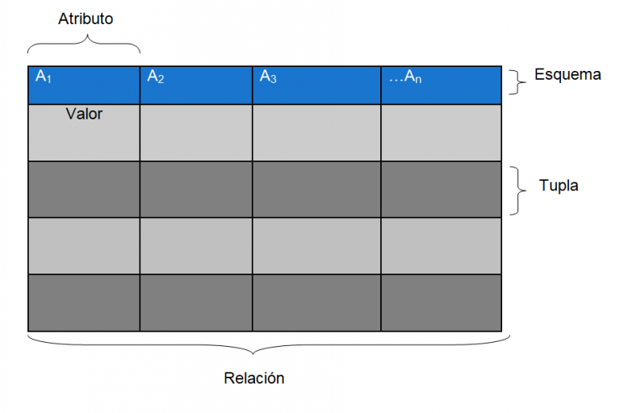
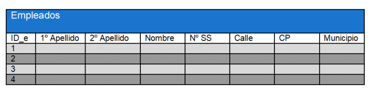

Estructura
La base de datos está dividida en dos secciones: el esquema y los datos. A través del esquema se define la estructura de la base de datos relacional, que almacena los siguientes datos:
- El nombre de cada tabla (o relación): es el conjunto de tuplas que comparten los mismos atributos, es decir, un conjunto de filas y columnas.
- El nombre de cada columna (atributo o campo): es un elemento etiquetado de una tupla (como por ejemplo, el número de la seguridad social de un empleado).
- El tipo de dato de cada columna.
- La tabla a la que pertenece cada columna.
- La fila (tupla o registro): es el conjunto de datos que representa un objeto simple.
Esta sería la estructura básica de una tabla de una base de datos relacional:

Así, una tabla con los datos de los empleados de una empresa podría verse así:

A cada empleado se le asigna un ID (o registro), que a su vez contiene información sobre cada empleado individual.